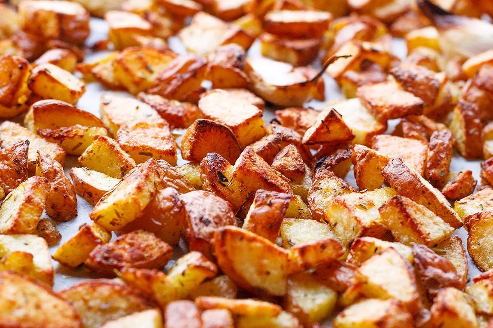

Salt And Pepper Short Rib
This is the recipe for asian style Salt And Pepper Short Rib
Ingredients
| Ingredient Name | Quantity |
|---|---|
| Large Potato | 1 |
| Garlic | 3 cloves |
| Cajun Flavour Seasoning | 10 g |
| Oil | 20 ml |
Directions
- Chop the pptato into bite-size pieces.
- Finely chop the garlic cloves.
- Mix the chopped garlic, cajun seasoning, and oil.
- Boil the chopped potato for 10 minutes.
- Filter out the water and mix the potato with the seasonings.
- Preheat the oven to 375 Fahrenheit degrees.
- Bake the potato for 15 minutes, take it out and flip over each pieces.
- Bake for another 5 minutes.
- Serve and enjoy!
